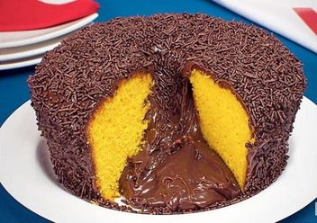

BOLO DE CENOURA FOFINHO

Ingredientes:
- 2 xicara (chá) de cenoura picada
- 4 ovos
- 2 xicaras(chá)de açúcar
- 2 xicaras(chá)de farinha de trigo
- 1 xicara(chá)de óleo
- 1 colher(café) de fermento em pó
Cobertura:
- lata de leite condensado
- caixinha de creme de leite
- colher cheia de margarina
- colheres cheiass de chocolate em pó
Modo de preparo
- Separe as claras das gemas.
- Bata as claras em neve e reserve.
- No liquidificador coloque a cenoura, o óleo e as gemas e bata por 5 minutos.
- Em uma tigela misture a farinha de trigo, o fermento e o açúcar, misture bem.
- Depois junte os ingredientes batidos, misture bem, por último junte as claras em neve.
- Em uma assadeira untada leve para assar em forno médio, pré-aquecido,
por aproximadamente 40 minutos, ou até que fure com um palito e ele saia limpo.
Cobertura:
Leve todos os ingredientes ao fogo e mexa até que desgrude da panela.